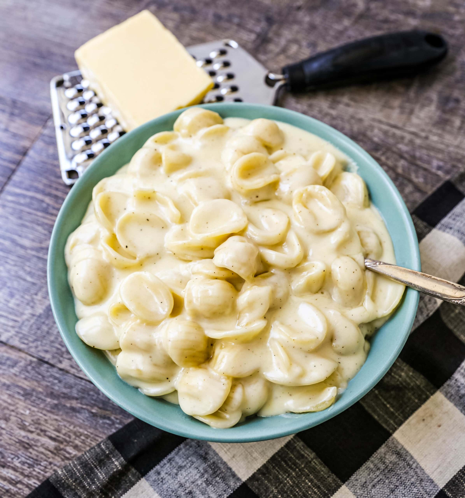

Odin White Cheddar Mac
Back to Home

Description
White Cheddar Mac is a creamy and cheesy pasta dish made with elbow macaroni and a rich white cheddar cheese sauce. It's a comforting and indulgent meal that's perfect for any occasion.
Ingredients
- 8 ounces elbow macaroni
- 4 tablespoons unsalted butter
- 1/4 cup all-purpose flour
- 2 cups milk
- 2 cups shredded white cheddar cheese
- 1/2 teaspoon garlic powder
- 1/2 teaspoon onion powder
- Salt and pepper to taste
- Optional toppings: breadcrumbs, extra cheese, or herbs
Steps
- Cook the elbow macaroni according to package instructions. Drain and set aside.
- In a large saucepan, melt the butter over medium heat. Stir in the flour and cook for about 1 minute until bubbly.
- Gradually whisk in the milk, stirring constantly until the mixture thickens and comes to a simmer.
- Reduce heat to low and add the shredded white cheddar cheese, garlic powder, onion powder, salt, and pepper. Stir until the cheese is melted and the sauce is smooth.
- Add the cooked macaroni to the cheese sauce and stir until well combined.
- If desired, transfer to a baking dish, top with breadcrumbs or extra cheese, and broil for a few minutes until golden brown.
- Serve hot and enjoy your creamy white cheddar mac!